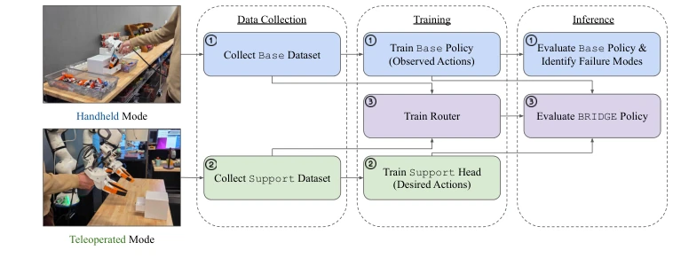
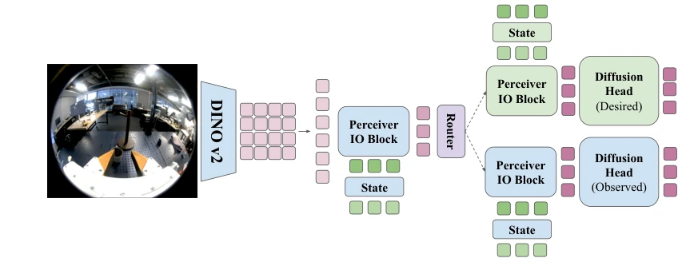
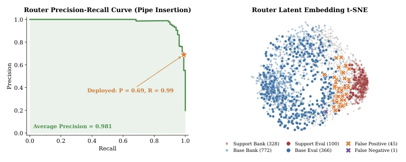
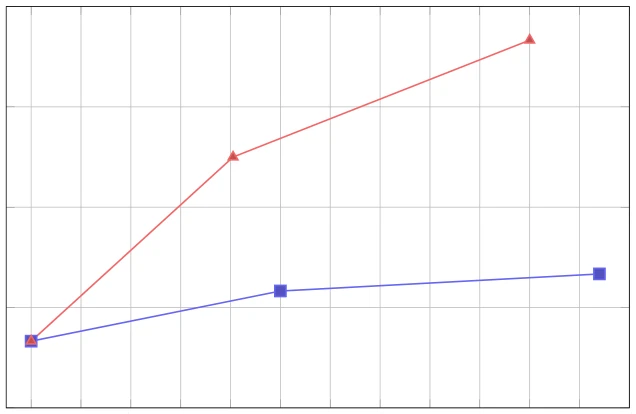
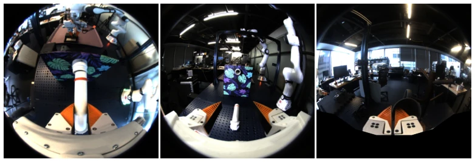
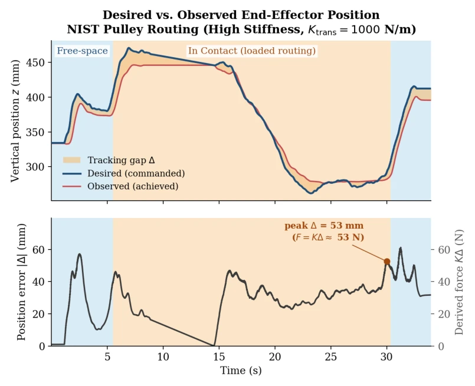
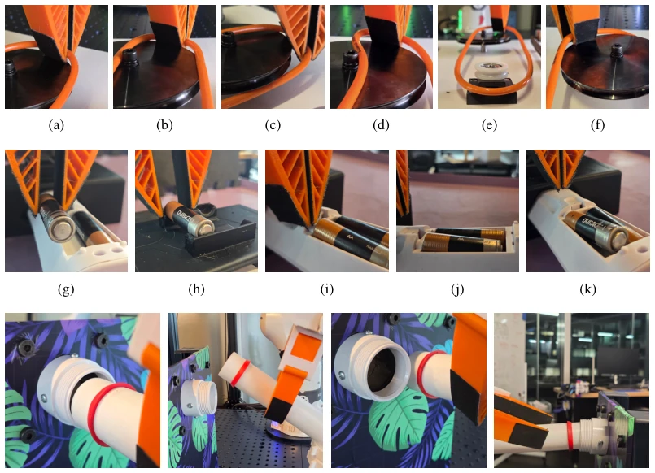
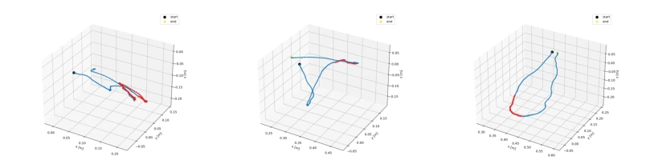

Figure 1: Action Validity Under Contact (Illustrative). We visualize the end-effector trajectory and contact- forces during the NIST pulley routing task [4]; real data is provided in the supplement. Left: In tolerant phases (blue), the observed action closely approximates the desired action. In contact-sensitive phases (yellow), the desired action drives below the contact surface; the resulting persistent error (∆) makes the observed trajectory an invalid proxy for desired intent. Right: Proportional control converts ∆into contact force via F ∝K(xd − x). High stiffness gain tracks the observed trajectory closely but at the cost of larger peak contact forces; low stiffness reduces peak force but cannot track observed trajectories through contact.
方法Method
整体流程分为三阶段：首先用 DM-UMI 手持模式收集基础数据集训练 Base Policy（观测动作）；其次评估并识别失败模式，针对接触瓶颈收集少量遥操作支持数据（期望动作）；最后训练 Router 进行硬切换。模型架构基于 Diffusion Policy，视觉编码器采用 DINOv2 [30] 配合 Perceiver IO 压缩 token，保留空间结构信息。核心创新在于双专家混合结构：Base Head 处理自由空间，Support Head 处理接触敏感区。Router 基于隐空间 k-NN 相似度计算标签，蒸馏为 MLP 门控网络，根据当前状态硬切换至对应专家。这种设计避免了动作平均导致的中间态无效，确保接触阶段使用期望动作监督，同时利用手持数据覆盖广泛场景。训练时冻结 Base 策略，仅微调 Support Head 和 Router，实现高效参数利用。
—

Figure 2: Dual Mode Data Collection Pipeline. First, we use DM-UMI in handheld mode to collect base demonstrations to learn the task scaffold. We then train and evaluate this base policy to identify failure modes. Second, we use DM-UMI in teleoperation mode to collect a targeted support dataset to address base policy failures. We then freeze the base policy and train a support head. Third, we train an action-conditioned router to hard-switch between the base and support heads at inference. Our BRIDGE model combines the base policy, support head, and router as shown in Figure 3.

Figure 3: Model Architecture. We propose BRIDGE, an extension of Diffusion Policy that dynamically routes between predicting observed and desired actions. Visual observations are encoded via DINOv2 [30], processed through a Perceiver IO block, and fused with state features via cross-attention. This shared latent representation is passed to a state-conditioned router, which hard-switches between the observed diffusion head and the desired diffusion head. To train BRIDGE, we sequentially train the base model (shown in blue), collect targeted teleoperated demonstrations to train the support head (green), and finally train the router (purple).
Figure 4: Policy Rollouts. We evaluate three precise, contact-rich tasks, including NIST pulley routing (top), pipe insertion (middle), and spring-loaded battery insertion (bottom).

Figure 5: Router Analysis. We visualize the precision-recall curve for the pipe insertion task (left). The deployed router achieves 99.0% recall and 69.0% precision, favoring early support activation over missed handoffs. Computed t-SNE latent embeddings demonstrate clear separation between base and support states, yielding only a single false negative (right).

Figure 7: Impact of Scaling Targeted Support Data. Starting from the same 100-demo base policy from the main paper, incorporating targeted partial teleoperation demonstrations improves pipe insertion success substantially more than simply adding more handheld demonstrations. While adding over 120 additional handheld demonstrations yields only marginal improvements, utilizing our targeted partial teleoperation approach drastically increases task success to over 70%.
其他图片Other Figures

Figure 6: Image Masking. We visualize the on-robot gripper (a) alongside its handheld data collec- tion counterpart (b). To prevent the model from exploiting the visual differences between the bodies of these two devices, we apply a mask to the gripper body (c).

Figure 8: Desired vs. Observed End-Effector Position during NIST pulley routing. Top: the commanded (desired, xd) and achieved (observed, x) vertical end-effector position for a single rout- ing run on the real system. In free-space phases (blue) the controller tracks the commanded pose closely; under loaded contact (orange) a persistent tracking gap ∆= xd −x (amber) opens and closes only after the load is released, indicating that the observed trajectory is not a valid desired- trajectory label in contact. Bottom: the position-error magnitude |∆|, with the corresponding de- rived contact force K∆(impedance law F = K∆) on the right axis. The peak in-contact gap (∆≈53 mm at Ktrans = 1000 N/m) corresponds to a derived contact force of K∆≈53 N.

Figure 9: Visualization of Common Failure Modes Across all Evaluated Tasks. (a–f) NIST Pulley Task: Failures typically arise from (a) incomplete pulley clearance due to gasket tension, (b) imprecise positioning during lowering, (c) overshooting the groove entirely, (d) binding on the bolt after lateral misalignment, (e) improper seating on the smaller pulley, and (f) partial or incomplete insertion into the groove. (g–k) Battery Insertion: Insertion errors commonly include (g) general lateral misalignment, (h) grasp failure and dropping due to collision with the holder, (i) applying downward force to the remote chassis instead of the battery slot, (j) incomplete seating within the compartment, and (k) missing the slot entirely at the far end of the battery. (l–o) Pipe Insertion: Typical fa

Figure 10: Trajectory Support Coverage Across Tasks. As illustrated by the red highlighted segments, the median trajectory support coverage spans 15% of the trajectory length for battery insertion (a), 4% for pipe insertion (b), and 8% for NIST pulley routing (c).